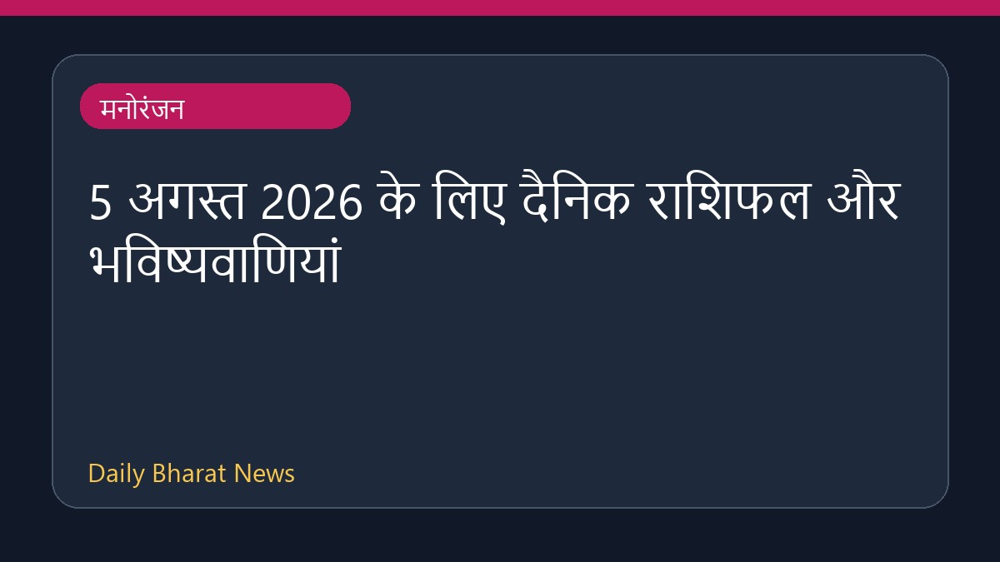

5 अगस्त 2026 के लिए दैनिक राशिफल और भविष्यवाणियां

विभिन्न मनोरंजन स्रोतों से 5 अगस्त 2026 के दैनिक राशिफल की जानकारी सामने आई है। इस दौरान सिंह राशि वालों को अपनी आगामी योजनाएं पूरी होने से पहले साझा न करने की सलाह दी गई है। इसके अलावा, कर्क, सिंह और कन्या राशि के जातकों के लिए नेतृत्व, करियर में पहचान और पारिवारिक सुख से जुड़े संकेत बताए गए हैं। यदि आप तनाव महसूस कर रहे हैं, तो यह समय अपनी गति धीमी करने और खुद पर ध्यान केंद्रित करने के लिए बेहद अनुकूल है।
मूल स्रोत: Entertainment Sources
Horoscope Today: August 5, 2026 - Vogue India ↗
Horoscope Today: August 5, 2026 - Vogue India ↗